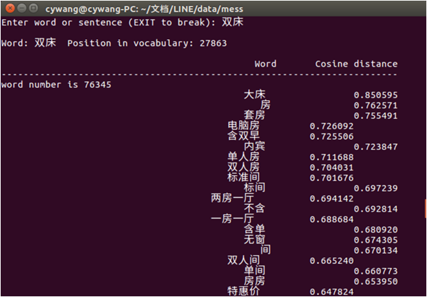
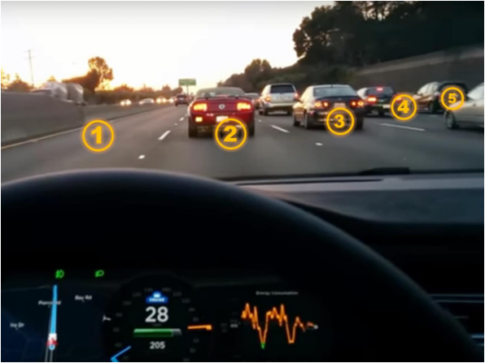

|
|
EducationB.S from CS/SJTU in 2019 |
Projects |
|

|
AI-Empowered Detection of Driver’s Phone-UsingMingran Peng, Yibo Han, supervised by Prof. Hongzi Zhu We designed and implemented a system on mobile phone to judge its position (driver’s position or not) by a single photo taken. If the phone locates in the driver area, the usage of the phone will be prohibited for safety. Neuron Network was applied on mobile phone to analyze photos. |

|
Obstacle Detection System Based on Embedded Device and LiDARSiqi Fan, Mingran Peng, Kaichen Tang, Shuo Wen, supervised by Prof. Ming Yang We designed and implemented obstacle detection system on embedded Device. (To the best of knowledge, all state-of-art system is implemented on PC but not embedded device) We also applied RANSAC algorithm on Raspberry Pi 3b with some improvement. |
|  |
Chaoxin Visualization Project: Semantic RecognitionMingran Peng, Chenyang Wang, Jiankai Sun, supervised by Prof. Bin Sheng We designed a method to analyze topic of given Chinese text and label the words in text, and we arenow working on finding ways to visualize the analyze result. |
|  |
AI-Empowered Lane-Level LocalizationYibo Han, Mingran Peng, supervised by Prof. Hongzi Zhu We tend to designe a lane-level vehicle localization system that can deal with dynamic transportation traffic and faint lane marks based on image recognition. It just Started recently and we are still studying state-of-art method. |
LEADERSHIPTeaching assistant of Prof. Yong Yu on course Data Structure, SJTU. Teaching assistant of Prof. Xiaofeng Gao on course Algorithms and Complexity, SJTU. (Full English course) |
Scholarship & HonorsMerit Student of Shanghai Jiao Tong University 2016 Honorable prize in The Mathematical Contest in Modeling (MCM) 2016 Academic Excellence Scholarship of Shanghai JiaoTong University 2016,2017,2018 Second prize on National Olympiad in Informatics in Provinces (NOIP) 2014 |
Acdemic ActivitiesI Present the 11th Annual International Conference on Combinatorial Optimization and Applications (COCOA 2017) on Dec.2017 with Prof. Sheng Bin as a participant of Chaoxin Visualization Project (mentioned before on research experience) and prepared the slides for presentation. |